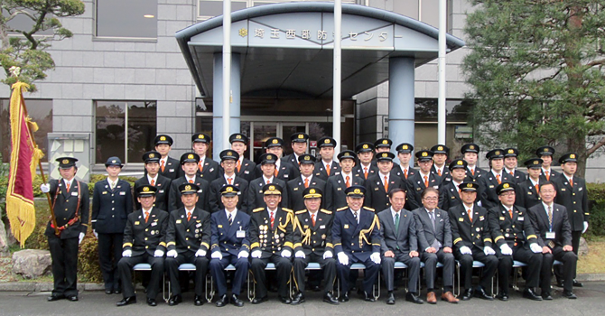

平成29年度TOPICS
□平成30年3月25日 第8分団「必勝祈願」（2018.3.18）等を追加しました。
□平成30年3月16日 第2分団「火災出動」（2018.3.16）を追加しました。
□平成30年3月12 は組「火防巡視」「震災復興元気市」（2018.30.11）を追加しました。
□平成30年3月7日 第3分団「分団対抗野球大会」（2018.2.25）を追加しました。
□平成30年3月6日 第10分団「火防巡視」（2018.3.4）を追加しました。
□平成30年3月5日 は組「師岡副団長送別会」（2018.3.4）を追加しました。
□平成30年3月2日 第2分団「研修旅行」（2018.2.17）を追加しました。
□平成30年2月27日 第9分団「救助資器材取扱訓練」（2018.2.4）を追加しました。
□平成30年2月26日 は組「飯能消防団創立70周年記念懇親会」（2018.2.24）を追加しました。
□平成30年2月26日 第3分団「一般救命講習」（2018.2.4）を追加しました。
□平成30年2月23日 第1分団「前田自治会自主防災訓練」（2018.2.4）他を追加しました。
□平成30年2月20日 は組「そなエリア東京 防災体験施設研修」（2018.2.18）他を追加しました。
□平成30年2月6日 第10分団「多機能車取扱訓練」（2018.2.4）を追加しました。
□平成30年1月31日 第11分団「特別点検」（2017.11.28）、「出初式」（2018.1.6）を追加しました。
□平成30年1月29日 第10分団「奥武蔵駅伝警備」（2018.1.28）を追加しました。
□平成30年1月24日 第1分団「出初式」（2018.1.6）他を追加しました。
□平成30年1月23日 は組「上尾市消防本部より感謝状」（2018.1.6）を追加しました。
□平成30年1月22日 第2分団 「出初式」（2018.1.6）を追加しました。
□平成30年1月15日 は組「歳末特別警戒」（2017.12.27）を追加しました。
□平成30年1月10日 第10分団「出初式」（2018.1.6）他を追加しました。
□平成30年1月10日 第9分団「歳末警戒」（2017.12.28）他を追加しました。
□平成30年1月10日 は組「出初式」（2018.1.6）を追加しました。
□平成29年12月26日 第6分団「月例」（2017.11.30）を追加しました。
□平成29年12月14日 は組「駿台団員募集ガイダンス」（2017.12.12）を追加しました。
□平成29年12月11日 は組「女性団員研修会」（2017.12.9）を追加しました。
□平成29年12月8日 第6分団「特別点検」（2017.11.25）を追加しました。
□平成29年12月6日 第7分団「特別点検」（2017.11.25）を追加しました。
□平成29年11月29日 第1分団「積載車清掃」（2017.11.12）を追加しました。
□平成29年11月29日 第5分団「特別点検予習」（2017.11.19）他を追加しました。
□平成29年11月28日 第10分団「特別点検」（2017.11.25）を追加しました。
□平成29年11月28日 第2分団「特別点検」（2017.11.25）他を追加しました。
□平成29年11月28日 は組「特別点検」（2017.11.25）を追加しました。
□平成29年11月21日 第10分団「特別点検予習」（2017.11.19）を追加しました。
□平成29年11月21日 は組「特別点検予習」（2017.11.19）を追加しました。
□平成29年11月21日 第1分団「飯能まつり警備」（2017.11.4-5）を追加しました。
□平成29年11月16日 は組「第23回全国女性消防団活性化広島大会」（2017.11.16）を追加しました。
□平成29年11月16日 第1分団「全団員訓練」（2017.10.29）を追加しました。
□平成29年11月8日 第2分団「飯能まつり警備」（2017.11.4）を追加しました。
□平成29年11月7日 第6分団「加治地区行政センター体育祭展示操法」（2017.10.1）を追加しました。
□平成29年11月7日 第1分団「普通救命講習1」（2017.10.25）を追加しました。
□平成29年11月7日 第10分団「飯能まつり警備」（2017.11.5）を追加しました。
□平成29年11月7日 は組「女性消防団の日 記念フェス」（2017.11.4）を追加しました。
□平成29年11月7日 第9分団「全団員訓練」（2017.10.29）他を追加しました。
□平成29年11月6日 第2分団「全団員訓練」（2017.10.29）を追加しました。
□平成29年11月6日 第10分団「全団員訓練」（2017.10.29）を追加しました。
□広報「かわら版24号」はこちらです。（2017.11.1発行）
□平成29年10月30日 は組「全団訓練/交通法規」（2017.10.29）を追加しました。
□平成29年10月26日 第10分団「夜間訓練」（2017.10.25）他を追加しました。
□平成29年10月24日 は組「コンフォール21自主防災訓練」（2017.10.22）他を追加しました。
□平成29年10月19日 第8分団「赤沢盆踊り大会警備」（2017.8.13）他を追加しました。
□平成29年10月12日 第10分団「白鬚神社例祭警備」（2017.10.8）を追加しました。
□平成29年10月12日 第1分団「研修旅行」（2017.9.9）を追加しました。
□平成29年10月11日 第3分団「防火水槽点検」（2017.9.24）を追加しました。
□平成29年9月19日 第1分団「分団放水訓練」（2017.8.30）を追加しました。
□平成29年9月19日 第9分団「操法訓練」（2017.8.6）を追加しました。
□平成29年9月13日 第3分団「合同防災訓練」（2017.9.3）を追加しました。
□平成29年9月12日 第1分団「中山地区自主防災訓練」（2017.8.27）を追加しました。
□平成29年8月29日 第2分団「三町内会自主防災訓練」（2017.8.27）を追加しました。
□平成29年8月29日 第10分団「第27回吾野宿まつり」（2017.8.26）を追加しました。
□平成29年8月24日 第2分団「新詰所シャッターイラスト」（2017.8.23）を追加しました。
□平成29年8月14日 第10分団「北川夏まつり警備」（2017.8.12）を追加しました。
□平成29年8月14日 第11分団「中継送水訓練」（2017.7.2）等を追加しました。
□平成29年8月7日 第10分団「夜間訓練」（2017.7.27）を追加しました。
□平成29年8月7日 は組「火防巡視」（2017.7.2）を追加しました。
□平成29年7月26日 第6分団「PR活動」（2017.7.24）他を追加しました。
□平成29年7月25日 第1分団「飯能夏祭り警備」（2017.7.15・16）を追加しました。
□平成29年7月24日 第2分団「飯能夏祭り警備」（2017.7.15・16）を追加しました。
□平成29年7月21日 第8分団「中継送水訓練」（2017.7.2）を追加しました。
□平成29年7月21日 第3分団「飯能夏祭り警備」（2017.7.15）他を追加しました。
□平成29年7月18日 第1分団「操法大会ポンプ位置決定」（2017.7.9）を追加しました。
□平成29年7月10日 第1分団「中継放水訓練」（2017.7.2）を追加しました。
□平成29年7月7日 第9分団「中継放水訓練」（2017.7.2）を追加しました。
□平成29年7月7日 第5分団「中継放水訓練」（2017.7.2）他を追加しました。
□平成29年7月4日 第2分団「中継放水訓練」（2017.7.2）を追加しました。
□平成29年7月4日 第10分団「中継放水訓練」（2017.7.2）を追加しました。
□平成29年7月4日 第7分団「合同訓練」（2017.7.2）を追加しました。
□平成29年7月4日 第1分団「放水訓練」（2017.6.25）を追加しました。
□平成29年6月22日 第4分団「放水訓練」（2017.6.1）等を追加しました。
□平成29年6月20日 第1分団「団幹部研修会」（2017.6.17-18）を追加しました。
□平成29年6月19日 は組「土砂災害訓練」（2017.6.4）を追加しました。
□平成29年6月9日 第6分団「飯能新緑ツーデーマーチ警備」（2017.5.27）他を追加しました。
□平成29年6月7日 は組「埼玉第2ブロック女性消防団員研修」（2017.6.3）他を追加しました。
□平成29年6月6日 第3分団「飯能新緑ツーデーマーチ警備」（2017.5.28）等を追加しました。
□平成29年6月5日 第10分団「土砂災害・全国防災訓練」（2017.6.4）を追加しました。
□平成29年6月5日 第1分団「飯能新緑ツーデーマーチ警備」（2017.5.28）等を追加しました。
□平成29年5月31日 第2分団「飯能新緑ツーデーマーチ警備」（2017.5.28）等を追加しました。
□平成29年5月29日 第10分団「飯能新緑ツーデーマーチ警備」（2017.5.28）を追加しました。
□平成29年5月23日 第5分団「全団員訓練」（2017.5.21）を追加しました。
□平成29年5月23日 第10分団「分団訓練」（2017.5.21）を追加しました。
□平成29年5月23日 第7分団「多機能車訓練」（2017.5.21）を追加しました。
□平成29年5月23日 第9分団「入団式」（20174.9）と「分団訓練」（2017.5.21）を追加しました。
□平成29年5月16日 第1分団「新入団員向け分団訓練」（2017.04.30）等を追加しました。
□平成29年5月9日 第5分団「入分団訓練団式」（2017.4.9）を追加しました。
□平成29年4月18日 第6分団「多機能車お清め」（2017.4.9）を追加しました。
□平成29年4月18日 第7分団「入団式・新入団員」（2017.4.9）を追加しました。
□平成29年4月14日 第10分団「入団式」（2017.4.9）を追加しました。
□平成29年4月13日 第3分団「入団式・訓練」（2017.4.9）を追加しました。
□平成29年4月12日 第2分団「入団式」「歓送迎会」（2017.4.9）を追加しました。
■平成29年4月9日（日）入団式
飯能日高消防署において、多数のご来賓のご臨席を賜り、平成29年度飯能消防団入団式が挙行されました。70名の昇格・異動があり、新たに入団した28名の新入団員（平成28年度途中入団者含む）には、梨木団長から辞令が交付されました。入団式の後には消防団員の基本となる礼式や各個・小隊訓練を実施しました。
